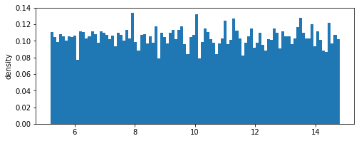
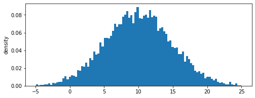
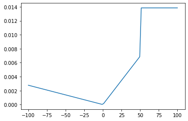
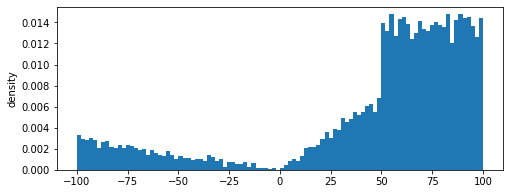
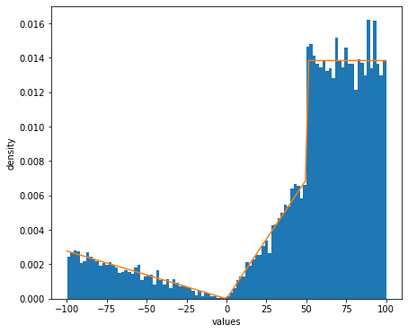
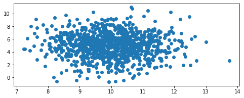
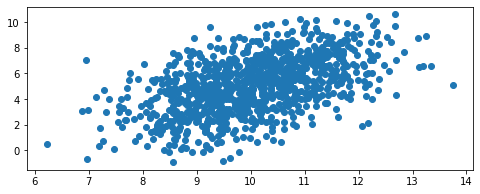
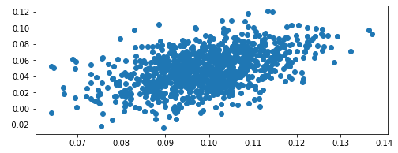

Using mvmlib to define univariate and multivariate probability density functions¶
This tutorial explains how to define different probability density functions using both standard built-in distributions and user-defined custom probability density functions
Simple 1-dimensional uniform distribution¶
We define a uniform distribution function given by:
where \(c\) is the center of the distribution, and \(r\) is the range. The distribution’s density function \(f(x)\) is given by
[1]:
# Simple 1-dimensional uniform distribution
import numpy as np
from mvm import UniformFunc
center = 10.0
range = 5.0
dist = UniformFunc(center=np.array([center]), interval=np.array([[range, ]]))
dist.random(10000) # draw 10000 samples from the distribution (they are stores inside)
[1]:
array([12.06919296, 13.10179147, 13.79772695, ..., 5.36410736,
14.69095015, 9.09991231])
We can check the approximate mean and standard deviations of the distribution and compare them with the exact values
[2]:
mean = dist.samples.mean() # should be close to 10.0
std = dist.samples.std()
# true standard deviation
exact_std = np.sqrt(((range*2)**2)/ 12)
print('Approximate mean: %f, \nExact mean: %f' %(mean,center))
print('Approximate standard deviation: %f, \nExact standard deviation: %f' %(std,exact_std))
dist.view()
Approximate mean: 9.993473,
Exact mean: 10.000000
Approximate standard deviation: 2.773436,
Exact standard deviation: 2.886751

<Figure size 432x288 with 0 Axes>
1-dimensional Gaussian distribution¶
We repeat the same exercise for the Gaussian distribution given by:
where \(\mu\) is the mean of the distribution, and \(\sigma\) is the standard deviation.
[3]:
# Simple 1-dimensional Gaussian distribution
from mvm import GaussianFunc
mu = 10.0
sigma = 5.0
dist = GaussianFunc(mu=np.array([center]), sigma=np.array([[sigma**2, ]]))
dist.random(10000) # draw 10000 samples from the distribution (they are stores inside)
[3]:
array([12.33780984, 7.29394816, 8.45848063, ..., 6.60838067,
-1.183258 , 8.64297244])
We can check the approximate mean and standard deviations of the distribution and compare them with the exact values
[4]:
mean = dist.samples.mean() # should be close to 10.0
std = dist.samples.std()
print('Approximate mean: %f, \nExact mean: %f' %(mean,mu))
print('Approximate standard deviation: %f, \nExact standard deviation: %f' %(std,sigma))
dist.view()
Approximate mean: 10.013612,
Exact mean: 10.000000
Approximate standard deviation: 4.806228,
Exact standard deviation: 5.000000

<Figure size 432x288 with 0 Axes>
1-dimensional arbitrary distribution¶
We define a random distribution using a custom piecewise linear probability density function given by:
The density function can be defined by the user as follows. The density function is divided by the total area to ensure that total probability of the density function does not exceed 1
[5]:
from mvm import Distribution
import matplotlib.pyplot as plt
x = np.linspace(-100, 100, 100) # 2D grid
# define a piecewise linear function
def density(x):
density = np.empty(0)
for value in x:
if value <= 0:
p = -0.1 * value
elif value > 0 and value <= 50:
p = 0.5 * value
else:
p = 50
density = np.append(density,p)
area = np.trapz(density, x)
density /= area # normalize by the area
return density
p = density(x)
plt.plot(x,p)
[5]:
[<matplotlib.lines.Line2D at 0x1f0d7213e48>]

The values of the density function can be fed to the Distribution class and used for further sampling
[6]:
# define the arbitrary distribution by providing the density values
dist = Distribution(p,lb=-100,ub=100)
dist.random(10000)
dist.view()
# Compare with exact density function
fig, ax = plt.subplots(figsize=(7, 6))
ax.set_xlabel('values')
ax.set_ylabel('density')
ax.hist(dist.random(10000).squeeze(), bins=100, density=True)
ax.plot(np.linspace(-100,100,100),p)
plt.show()


2-dimensional Gaussian distribution¶
We define a 2-dimensional joint probability density function using the same built-in Guassian class. The joint PDF is given as follows
where \(\boldsymbol{\mu}\) is the vector of means, and \(\boldsymbol{\Sigma}\) is the covariance matrix.
The density function can be defined by the user as follows.
[7]:
# 2D example
mean_1 = 10.0
mean_2 = 5.0
sd_1 = 1.0
sd_2 = 2.0
cov = 0.0
mean_vector = np.array([mean_1, mean_2])
cov_matrix = np.array([[sd_1 ** 2, cov], [0, sd_2 ** 2]])
dist = GaussianFunc(mu=mean_vector, sigma=cov_matrix)
dist.random(1000)
mean = dist.samples.mean(axis=1)
std = dist.samples.std(axis=1)
print('approximate means:')
print(mean)
print('exact means:')
print(mean_vector)
print('approximate standard deviations (diagonal of cov matrix):')
print(std)
print('Exact standard deviations (diagonal of cov matrix):')
print(np.sqrt(cov_matrix.diagonal()))
# View distribution
dist.view()
approximate means:
[9.97413398 4.97442997]
exact means:
[10. 5.]
approximate standard deviations (diagonal of cov matrix):
[0.9920326 1.88438444]
Exact standard deviations (diagonal of cov matrix):
[1. 2.]

We can also introduce some covariance
[8]:
mean_1 = 10.0
mean_2 = 5.0
sd_1 = 1.0
sd_2 = 2.0
cov = 2.0
mean_vector = np.array([mean_1, mean_2])
cov_matrix = np.array([[sd_1 ** 2, cov], [0, sd_2 ** 2]])
dist = GaussianFunc(mu=mean_vector, sigma=cov_matrix)
dist.random(1000)
# View distribution
dist.view()

Define a two dimensional arbitrary joint PDF¶
This requires more effort from the user to define the two-dimensional joint probability density function. We show this can be done to reproduce the 2D Gaussian function above. The Gaussian class provides the compute_density method for getting the density values.
We use the design of experiments library in mvmlib to calculate a full-factorial 2D grid of density values first.
[9]:
from mvm import Design
x = Design(np.array([-100, -100]), np.array([100, 100]), 512, "fullfact").unscale() # 2D grid
p = dist.compute_density(x) # get density values
dist_arb = Distribution(p.reshape((512, 512)))
dist_arb.random(1000)
dist_arb.view()
